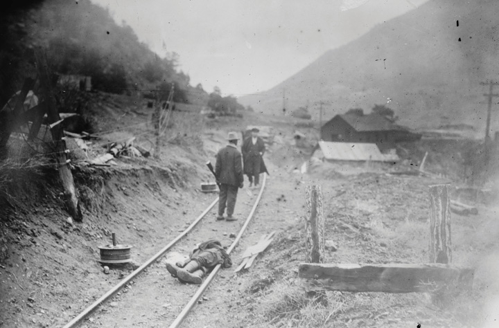
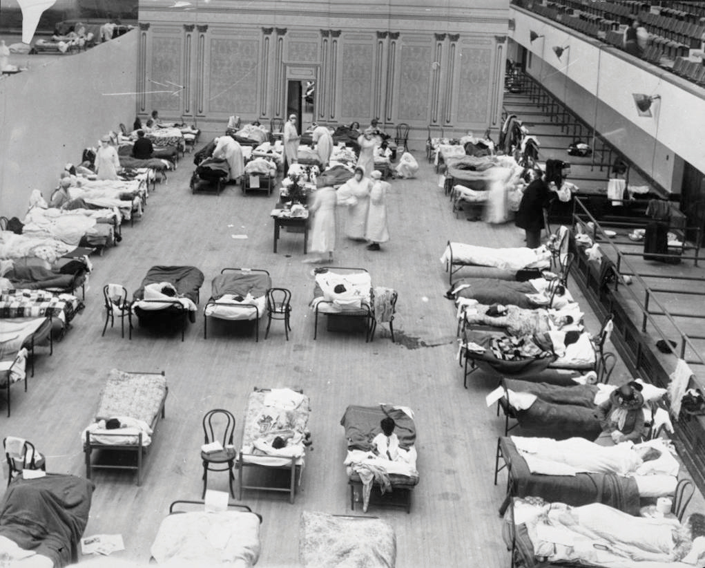
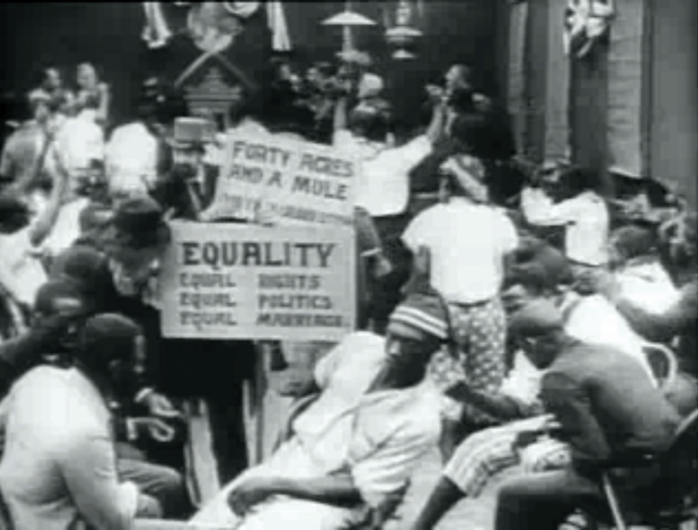
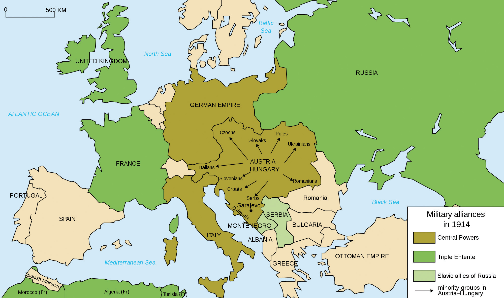

Wilson pledged to make the interests of farmers and laborers a leading priority, promising reforms that would “shield” these groups from the negative consequences of industrialization and the abuses of monopolies. The president supported the Clayton Antitrust Act of 1914, which clarified the definition of illegal business practices. The act declared that any action that reduced competition in the marketplace would be subject to federal penalties, as determined by the newly created Federal Trade Commission (FTC)A federal agency created in 1914 to enforce antitrust legislation and other measures designed to prevent monopolies and unfair business practices. The FTC also seeks to defend consumers from fraud and deceptive business practices.. The FTC was charged with enforcing federal regulations, such as a section of the Clayton Act that prohibited individuals from serving as members of a corporation’s board of directors if they had a conflict of interest. For example, if an individual was a member of Ford’s board of directors, he could not also serve another automaker in that capacity. In the past, various holding companies had conspired to form trusts by appointing the same individuals to multiple boards as a way of conspiring to eliminate competition. The Clayton Act also required government approval for mergers and acquisitions to prevent the growth of monopolies, and it banned a variety of unfair business practices. For example, a company could no longer require one of its suppliers to refuse the business of its competitors as part of the price of doing business. In the past, courts had interpreted antitrust laws such as the Sherman Act against labor unions. For example, the leaders of the Pullman Strike of 1894 were declared in violation of antitrust laws when their wildcat strike began affecting other rail companies. For this reason, the Clayton Act specifically exempted labor unions from its provisions.
The Clayton Act was inspired by the work of Progressive attorney, author, and later Supreme Court Justice Louis BrandeisAuthor, attorney, and the first Jewish appointee to the US Supreme Court. A leading private university in Massachusetts was named in honor of Brandeis, who was known as a someone who exposed corruption in the financial industry and defended consumers against corporate interests.. Known as “the People’s Lawyer,” Brandeis authored the influential book Other People’s Money, which exposed the techniques used by trusts to create monopolies and destroy small businesses. Brandeis showed how men who sat on the boards of banks, as well as various trusts, were able to manipulate the money supply to enrich themselves. The book also demonstrated the artificial limits that were placed on the supply of capital and the way these methods discouraged consumer spending and investment. At their worst, these trusts destroyed innovation by rewarding companies that were less competitive but enjoyed powerful connections. Brandeis also fought on behalf of the right of free speech—a liberal cause that was still gaining acceptance in the early twentieth century. His nomination to the Supreme Court was controversial both because of his liberal politics and because he was Jewish in an era of virulent anti-Semitism. Today, most scholars of legal history consider Brandeis to be one of the most capable justices in US history. In an era when protections of free speech and privacy were considered secondary and conditional to other interests, Brandeis helped to construct the modern legal framework that protected these freedoms as inherent rights of all US citizens.
Figure 5.2

Progressive attorney Louis Brandeis was the first Jewish appointee to the US Supreme Court. A fellow Justice called Brandeis a “militant crusader for social justice whoever his opponent might be.”
Wilson recognized that the nation’s banking system needed federal support to provide greater stability, especially as a number of prominent banks failed despite the relative financial tranquility of the early 1900s. In each instance, bank failures led to the loss of depositors’ money and panicked selling on Wall Street. In an effort to provide greater regulation and stability to the nation’s banking system, the Federal Reserve Act of 1913Created the modern central banking system of the United States. The Federal Reserve acts as a central bank for the government and establishes monetary policies that affect the economy such as the federal funds rate—the interest rate commercial banks pay to borrow money. created the Federal Reserve and twelve district banks scattered throughout the nation. The Federal Reserve has authority over policies such as the amount of money the government should print. The role of the Federal Reserve also includes authority over monetary policy, including the establishment of interest rates that member banks pay to borrow money from each other. The Federal Reserve can lower this rate to spur investment or raise it to limit inflation.
Some Progressives supported a program whereby the federal government would also require strict regulation of private banks and provide insurance against bank failures. However, these more active government measures would not be approved until after the nationwide panic that helped create the Great Depression. The powers granted to the Federal Reserve expanded during these years, and the institution continues to manage the nation’s banking system by regulating the flow of credit to banks. As a result, decisions made by the Federal Reserve have a direct impact on businesses and the general public.
The Populists of the 1890s had sought the enactment of a modest federal income tax that would apply only to the wealthy. Previous attempts to add direct taxes on the wealthy had been challenged in the courts, leading to the decision to seek a constitutional amendment specifically authorizing a federal income tax. With the support of the Progressives, the Sixteenth Amendment was approved by Congress in 1909 and ratified by the states in February 1913. That fall, Congress approved an annual tax on all those who made more than $4,000 per year. Because most workers made about $80 per month, only the wealthiest 5 percent of households paid any federal taxes the following year. In addition, the tax rates were quite modest, ranging from 1 percent for those who made just above $4,000 to a maximum rate of 7 percent for the wealthiest Americans. Conservatives feared that these relatively modest taxes would be the harbinger of more assessments. In 1916, they fought against a proposed tax increase and an additional tax on corporations. They were especially angered by the creation of an estate tax that was levied when property valued above a certain amount changed hands from a deceased individual to his or her children. Even after tax rates increased and the exemption was lowered, most Americans still did not earn or own enough property to come under the terms of the new law. Most believed the feature requiring those with higher incomes to pay higher rates—a feature known as progressive taxationA system where the rate of taxation increases for individuals who earn more money. For example, incomes between $50,000 and $80,000 might be taxed at 20 percent, while incomes between $300,000 and $1,000,000 would be taxed at 35 percent.—was fair. As the size of the federal government increased in future decades, tax rates also increased while the exemption level declined. As a result, larger percentages of Americans were required to pay federal income taxes, resulting in greater public awareness regarding federal tax policies.
A second goal of the Populist Party of the 1890s was a constitutional amendment requiring direct election of US senators. Although the Populists had failed to pass this measure, their ideas continued to generate support leading to the approval of the Seventeenth Amendment in April 1913. The amendment ended the practice whereby state legislatures selected the delegates to the Senate. Instead, popular elections in each state would determine each senate seat. Other goals of the Populists were realized during the early years of the Wilson administration, such as the Adamson Act establishing the eight-hour day for railroad workers. The federal government also approved a measure providing financial compensation and reimbursement of medical expenses for laborers injured at work, although the measure only applied to federal employees.
Laborers, unions, and Progressive reformers worked at the state level throughout the early 1900s and successfully passed a growing number of mandatory compensation laws that were similar to the protections federal employees enjoyed. States also passed a host of laws mandating maximum hours and minimum wages. However, tens of thousands of employees continued to be injured or even killed at work each year. These industrial casualties led to demands for workers’ compensation laws that would apply to private industry much like the federal laws that protected federal workers. In addition to a desire to improve workplace safety, part of the reason Progressives favored these reforms was a desire to thwart the growth of radicalism and the Socialist Party. They also hoped to prevent labor strikes, which continued to increase in number, duration, and intensity. By 1916, the Industrial Workers of the World (IWW) had nearly 100,000 members. Not all of these women and men approved the Wobblies’ ultimate goal of a general worker’s revolution. However, most at least viewed the IWW as favorable alternative to the more conservative unions such as the American Federation of Labor (AFL).
In many areas where the IWW led strikes, such as the rubber mills of Akron, Ohio, and among the lumberjacks in the Dakotas, the AFL was nonexistent. The IWW sought to organize all workers regardless of race or gender, including the women of the Akron mills. Contrary to the notion that women did not enter the industrial workforce in large numbers until World War II, women represented over 20 percent of workers in the rubber industry at this time. The IWW also organized the men of the lumber camps in Minnesota, as well as the immigrant iron miners of the North Star State. These IWW-sponsored strikes began in 1916 with the sawmill workers and spread into the hinterlands where the men whom the lumber companies pejoratively labeled “timber beasts” lived. Government officials acceded to nearly every demand of the coal companies, mobilizing police to arrest labor leaders and even passing laws against the circulation of pamphlets. Newspapers also agreed to print a variety of stories about lumberjacks hiding caches of weapons and committing acts of terrorism with little effort to verify the accuracy of their reports.
Because some workers, IWW leaders, and Socialist agitators had acquired arms or had advocated violent resistance in the past, nearly every story that was printed became at least somewhat believable in the public mind. The IWW fought back when attacked by sheriffs and representatives of the lumber companies. The result was a number of shootouts, such as one in Washington state that left dozens wounded and seven dead in 1916. After these violent confrontations, the lumber companies received even greater assistance from law enforcement officials, which helped them crush the strikes and the IWW. Minnesota created a Commission of Public Safety that rounded up and arrested the remaining labor leaders. The state legislature even passed a law criminalizing the spread of information by those whose beliefs were considered radical or dangerous by government officials.
The most famous labor strikes of this era occurred in the minefields of Colorado and West Virginia. The Paint Creek-Cabin Creek Strike began in the spring of 1912 when unionized workers in West Virginia demanded a pay increase and coal operators retaliated against the union. The conflict quickly spread to the nonunionized coalfields and soon became a contest to determine whether workers had the right to organize and bargain collectively. A series of skirmishes between miners, state troops, police, hired “detectives” who were employed by the coal company, and men who came to the area as strikebreakers gripped the nation’s headlines for an entire year. The federal government would later hold investigations into the actions of two different West Virginia governors who sided with the coal companies. This was the first time the federal government had launched an official investigation of the actions of a state government in US history—a crucial turning point in the history of states’ rights versus federal authority. Most investigators believed that the state used heavy-handed tactics to help thwart the unions and the miners. Recent historians have further detailed the way that coal companies instigated violence by men hiring armed detectives to intimidate the workers. More than 200 miners and labor organizers were imprisoned, including the eighty-six-year-old union organizer “Mother” Mary Harris Jones. Many of these labor organizers faced military court-martials, while others had been imprisoned without charges. Although most, including Jones, were eventually released, the state had clearly acted on behalf of the coal operators who successfully prevented the spread of unionization throughout Appalachia.
Jones was ordered by the governor to leave the coalfields of West Virginia. She complied but did not retire from the work of representing miners. The next year, she could be found walking to and from various mining communities in the mountains of Colorado, representing the IWW and spreading news and ideas about labor activism. The Rockefellers owned a variety of mines in central Colorado where immigrant and native-born workers had been used against one another in the past to thwart labor activism. Due to the efforts of Mother Jones and the leaders of the United Mine Workers, the Colorado miners launched one of the most well-organized strikes in US labor history between September 1913 and April 1914. In that month, state troops attacked an encampment of miners and their families. The event is known today as the Ludlow MassacreThe deadliest incident during an extended strike by coal miners, the Ludlow Massacre occurred when Colorado state troops fired on a miner’s encampment. and includes the deaths of an estimated two dozen men, women, and children.
Figure 5.3
One of the photos depicting the violence common during the Ludlow Massacre. Here, one of the miners stands next to one of his comrades who was killed.
The Colorado miners protested the long hours and low pay they were forced to endure, as well as the practices of the coal companies, which charged high rents and food prices in the mining towns that were ruled by company officials. Jones was denounced in the Senate as the “mother of all agitators.” Jones reminded the Senate that at her age, she could only hope to be the “grandmother of all agitators.” She countered that the conditions within the coal industry had created the strikes, not her sojourns between the camps. The coal companies convinced the state to arrest Jones and send troops. They also hired hundreds of their own private detectives armed with automatic weapons. Many of the miners had already acquired weapons of their own and vowed to fight back. The nation again watched in horror as men killed for coal, viewing the arrival of the National Guard and other federal troops as the only way to restore order.
At first the miners cheered the arrival of guardsmen, believing the governor had sent the troops to protect them from the hired guns of the coal companies. Instead, the soldiers surrounded coal camps. The result was a series of well-publicized massacres where soldiers set the men’s tents on fire to force their compliant surrender. Given the tendency of the miners’ families to hide in the tents for safety, this was an effective tactic to control the miners at least in the short term. After the Ludlow tent colony was set on fire, eleven children and two women were burnt to death while a dozen men were killed or wounded trying to escape or turn back to rescue their families.
News of the Ludlow Massacre bred a new spirit of worker solidarity and made the guardsmen question their orders. Area miners began walking off of their jobs and joining the fight, while many National Guard units, themselves composed primarily of working-class men, set down their weapons and denounced the governor. However, federal troops had previously been ordered into the coalfields, and at this critical moment, they arrived and arrested the leaders of the movement. The strike had failed at a tremendous cost to the state and the coal company, while dozens of miners and their families had been killed. Labor leaders and those who opposed unions soon launched a second battle, this time for historical memory. Future activists preserved the memory of the Ludlow Massacre as evidence of corporate-government collusion and the importance of protecting the right of workers to organize. Opponents of unions continued the nineteenth-century tradition of blaming organized labor for the violence that occurred in the wake of yet another strike.
Support for racial equality remained the most obvious shortcoming of the Progressive movement, although a small number of whites joined or supported organizations dedicated to ending lynching and segregation. The Democrats remained the party of white supremacy in the South. In some areas, such as southern Indiana and Illinois, the Democrats waged local campaigns that channeled the message of Southern Democrats during Reconstruction who swore to take back their government by restoring white rule. In these areas, new patterns of migration led to contested neighborhoods where black workers in cities such as East St. Louis purchased homes in previously all-white neighborhoods and took jobs in previously all-white factories. The 1917 riots in the Illinois suburb of East St. Louis may have been the most deadly of its kind in US history. Official figures list thirty-nine black and nine white citizens as being killed during the East St. Louis Riot, but these figures were questioned at the time, and some historians estimate that at least a hundred more might have been killed. Several thousand black residents simply fled the city while hundreds of homes in black neighborhoods were destroyed. These riots were soon overshadowed by dozens of similar race riots that followed in 1919 and 1921. The nation seemed numb to the violence of these riots, perhaps related to the astounding destruction of World War I and a worldwide influenza outbreak that killed 20 to 40 million between 1918 and 1919.
Figure 5.4
Volunteer nurses in Oakland, California, tend to victims of the influenza pandemic who were placed inside a public auditorium and assisted by the American Red Cross.
A much smaller race riot that occurred nine years prior in a different Illinois community took on a greater symbolic meaning than the carnage in East St. Louis. On August 14, 1908, a white woman accused a black man in Springfield, Illinois, of sexual assault. The facts in the case quickly became immaterial as an angry mob gathered at the prison demanding that the suspect be released to them so that they might immediately lynch him without a trial. When the mob learned that the police had anticipated trouble and transferred the accused man to another jail, the mob decided to set fire to a number of black-owned businesses. Not satisfied, they set the homes of forty black residents on fire and lynched a barber who had attempted to defend his home. The next evening, the mob gathered again and charged a line of police and soldiers who were guarding the now homeless black residents of Springfield. Thwarted again by men with guns, the mob decided to lynch an elderly black man who had lived in Springfield most of his life. The man was singled out because he had married a white woman three decades prior. Fifty black families were suddenly homeless in an attack that demonstrated a mania to attack anyone who was black. Sadly, attacks such as these had occurred in nearby northern cities such as Evansville, Illinois, and Cincinnati, Ohio. However, the Springfield riot shocked the nation as two black men who had been accused of no crime had been brutally murdered in the shadow of Abraham Lincoln’s historic home. If something like this could happen in Springfield, most Americans finally recognized, it could happen anywhere.
In response, a group of liberals of various racial backgrounds formed the National Association for the Advancement of Colored People (NAACP)Established in 1909 in the wake of a race riot in Springfield, Illinois, the NAACP quickly became the leading civil rights organization. In its early years, the NAACP sponsored a host of legal challenges against segregation. in 1909. Hundreds of local, state, and even national civil rights groups had come and gone since Reconstruction. The NAACP was different for a number of important reasons. It attracted a broad and diverse nationwide membership. Although most of its national officers in its formative years were liberal whites, the local chapters of the NAACP were led by officers who were predominantly African American. At the national level, W. E. B. Du Bois was the only black officer appointed to lead the NAACP when it was founded. He was given a “token” position as the editor of the NAACP’s publication department, a position that was tantamount to putting together a newsletter that would highlight the actions of the new organization. However, Du Bois soon became the most influential member of the organization when he used this position to establish The Crisis—the official publication of the NAACP. Much to the chagrin of some of the more conservative white officers of the NAACP at this time, The Crisis was uncompromising in its demand for equality and unconcerned with accommodating the views of those who advocated moderate change. While these national leaders espoused their ideas through correspondence with chapter leaders and concerned themselves mostly with clerical matters and the collection of monthly dues, Du Bois and The Crisis became the effective voice of the NAACP.
Figure 5.5

The very first image of The Crisis, the official journal of the NAACP.
The strength of the NAACP was in its local chapters. These grassroots organizations won a series of small but important decisions against segregation in various Northern and Western cities during the 1910s. The most significant NAACP victory of this decade occurred in the Border South town of Louisville, Kentucky, in 1917. The city had passed an ordinance that legally mandated residential segregation. Other cities such as St. Louis and Baltimore considered similar measures that won the support of most white voters. Had the Louisville NAACP not challenged the segregation law as a violation of the Fourteenth Amendment, most major cities and hundreds of smaller communities would have likely passed similar ordinances. Racial strife regarding housing exploded in violence that killed nearly forty people in Chicago in 1919. That year, the violence spread to as far north as Connecticut and led to race riots in Western towns such as Omaha where the mayor was nearly lynched in an unsuccessful attempt to protect a black man from a mob of at least 4,000. After riddling the man’s body with bullets, the men lynched his corpse, drug his body through the streets, and then set it on fire. Despite dozens of photos clearly showing the faces of the mob, the only men convicted of any crime in Omaha were those accused of damaging the courthouse.
Racial conservatives defended the Louisville segregation law as racially neutral because it forbid whites from living in predominantly black neighborhoods just as it prevented black families from buying homes in white neighborhoods. The leaders of the Louisville NAACP understood that most whites nationwide supported the law and decided to frame their arguments as a violation of property rights. As a result, they tested the law by having one of their leading white members sell a house to the president of the local chapter who was black. When the law prevented the black man from taking ownership of the house he had purchased, he backed out of the contract, leaving the white property owner empty-handed. Even supporters of the law marveled at the genius of the Louisville NAACP to create a situation where a law intended to mandate racial segregation had infringed on the property rights of a white landowner. National NAACP president and constitutional lawyer Moorfield Storey argued the case on behalf of the bereaved white landowner, arguing that his freedom to dispose of his property had been abridged by the segregation law. The Supreme Court agreed that the law was an unconstitutional abridgement of the government’s responsibility to protect private property rights, although the justices added their own editorial support for residential segregation in the majority decision. As a result, the 1917 case of Buchanan v. WarleyA lawsuit sponsored by the Louisville NAACP that challenged and defeated the city’s residential segregation law. This was a significant victory because a number of other cities such as Baltimore and St. Louis were about to pass similar laws. outlawed residential segregation laws but did little to confront the idea that white and black Americans should not live in the same neighborhoods.
The NAACP was less successful with its attempts to challenge directly the legal doctrine of separate but equal in the South, although the organization did strike down the legality of the Grandfather Clause that had exempted whites from laws restricting voter registration. NAACP chapters in Maryland and Oklahoma worked together and won a series of legal challenges to their state constitutions, which culminated in the Supreme Court decision in Guinn v. the United States (1915). Although the court ruled that the Grandfather Clause violated the Fifteenth Amendment, other provisions restricting black suffrage continued just as other methods of maintaining residential segregation survived Buchanan v. Warley.
One of the greatest successes of the NAACP nationwide was the ability of local chapters to prevent or restrict the showing of a racially charged film that became the first Hollywood blockbuster. Birth of a Nation was a historically themed drama depicting Reconstruction as a tragic era where former slaves were foolishly permitted to vote and hold office. Along with a coterie of corrupt white liberal carpetbaggers bent on destroying the South, the film suggested that former slaves who were suddenly elevated to positions in government demonstrated incompetence and depravity. The film portrayed white women being ravaged by black men while the would-be heroes of the region, the former Confederates, were barred from their natural role as leaders and protectors by an invading army of Yankee soldiers. In the end, the Ku Klux Klan emerges in the film as the “protectors” of the South, and white Yankees and Southerners experience a rapprochement based on a return to normalcy through mutual recognition of white supremacy as an inherent truth. The silent film began with a screenshot displaying a quote of the sitting president and former professor of history Woodrow Wilson. “The white men were aroused by a mere instinct of self-preservation,” viewers were informed, “until at last there sprung into existence a great Ku Klux Klan, a veritable empire of the South, to protect the Southern country.” The quote was taken from one of the leading US history textbooks, one that Wilson had authored and that reflected the dominant view of Reconstruction by white historians at this time.
Figure 5.6
A still image from the film Birth of a Nation. This film was the most-viewed movie in Hollywood history and was shown in theaters for several decades. The movie depicted the Klan as heroic, black voters as unprepared for citizenship, and the unification of the North and South based on a common recognition of Aryan supremacy.
African American historians countered this heroic view of the Klan with their own interpretations of the past. In addition, scores of local NAACP chapters protested against the racist implications of the film. In dozens of cities and even a handful of states such as Kansas and West Virginia, white and black members of the NAACP passed special laws barring the showing of films that might incite racial hatred. These small victories united individual chapters and may have accounted for the rapid growth and sustainability of the NAACP in an era when attempts to pass national legislation against Jim Crow and lynching were repeatedly blocked by Southern Democrats. African American author and filmmaker Oscar Micheaux responded to the commercial success of Birth of a Nation by directing films that depicted black history from Africa to America. Micheaux directed more than forty movies that employed black actors and actresses and presented the black perspective of African American history. Many of Micheaux’s films and books were inspired by his experience as a homesteader in South Dakota. In fact, it was his third novel about a black homesteader in this region that led to his “discovery” by a black-owned film company that was founded in Lincoln, Nebraska, before moving to Los Angeles.
Figure 5.7 Pioneering Black Filmmaker Oscar Micheaux

Micheaux also formed his own commercial studio based out of Chicago and produced films such as The Homesteader and Within Our Gates. These were among the first “race films”—that is, movies made by black filmmakers for black audiences. Micheaux strictly guarded the independence of his projects and created dramatic films that portrayed black history, as well as dramas featuring dignified black women and men who played the roles of heroines and heroes rather than fools or villains. As a result, these early years are sometimes called the “golden era of black cinema.” However, experts in black film history, such as modern director Melvin Van Peebles, have also demonstrated the tremendous sacrifices that were made by these early pioneers. Black film producers such as Micheaux surrendered the profits their creative energies might have produced making comedies. The black actors and actresses who rejected the stereotypical roles Hollywood offered also rejected the wealth and fame some black actors achieved. For example, Lincoln Perry earned over $1 million playing the character of Stepin Fetchit. Although Perry was both talented and well educated and could have played a variety of characters, his on-stage buffoonery appealed to racist images at a time when black actors and actresses in Hollywood were limited to roles as cowardly brutes, submissive fools, and contented servants. Race films themselves rarely made money, but from the perspective of black audiences, the sacrifices of these pioneers offered a few precious seconds of humanity on the silver screen.
Austria-Hungary was a divided and crumbling empire—so much so that its government actually had two different and often competing centers of government. Seeking to reassert its authority over the Balkans, Austria-Hungary seized control of Bosnia and Herzegovina in 1908. This action deeply angered many Slavic people throughout the region. Tensions remained high throughout the Balkans and peaked in June 1914 when Austria-Hungary’s Archduke Franz Ferdinand was assassinated by an advocate of Slavic nationhood and independence. The individual who committed the deed was tied to a nationalist movement based out of the independent nation of Serbia. This group and many others supported a growing independence movement among ethnic Serbs within Austria-Hungary. In addition to the Serbs, nearly a dozen other subject peoples representing various ethnic groups sought to free themselves of imperial rule and create their own independent nations. Facing internal revolt that threatened the implosion of their empire, the leaders of Austria-Hungary felt that they must make an example of Serbia. However, the situation was complicated by an alliance between Serbia and Russia that required each nation to come to the other’s defense.
Figure 5.8
Europe was dominated by a few leading empires, each of which had a number of alliances with other European empires. This map demonstrates the emergence of two alliance systems, the Triple Entente and the Central Powers. It also indicates the divisions within Austria-Hungary among various ethnic groups. Notice the position of Serbia, a small nation that was allied with Russia.
The political and diplomatic situation throughout Europe was equally complex and volatile. Imperial rivalries, territorial conflicts, arms buildups, and a series of military alliances created the possibility that a regional conflict like what was emerging in the Balkans might expand until it involved nearly all of the leading armies of the world. Unresolved conflicts and historic grievances throughout Central Europe framed the tensions. Prussia (the dominant state of what would become modern Germany) had defeated France in 1871 and acquired the formerly French territory of Alsace-Lorraine. Neither of the countries considered the matter settled, and both nations garrisoned an increasing number of troops along their common border. Each nation also formed alliances with neighboring nations. These alliances discouraged either from precipitating a war to seize more territory, yet they also increased the likelihood that any war between the two nations would expand beyond France and Germany.
The forts and troops along the German-French border represented only a fraction of the rapidly expanding armed forces of Europe in early 1900. England, France, Germany, Russia, Italy, Belgium, and other imperial powers sought to expand their global empires. Most of these local battles were waged by and on colonized peoples. European conquest was dependent on exploitation of long-standing political, ethnic, and religious divisions. Even as millions throughout Africa and Asia attempted to maintain their independence, others found themselves fighting on behalf of Europeans for a variety of reasons. Europeans were likewise divided, and imperial competition led to dozens of small conflicts between each of these nations along the contested borders of their overseas colonies. However, in each case, great efforts were made to make sure that warfare did not spread into Continental Europe. The brief Franco-Prussian War was the only war fought in Europe between these nations between Napoleon’s defeat in 1815 and the outbreak of World War I ninety-nine years later. From the perspective of Africans, Asians, and many peoples in Southern Europe and the Middle East, historians who refer to this period as a time of peace demonstrate a callous indifference to their struggle. From the perspective of many Europeans, the nineteenth century was one of territorial expansion while avoiding direct armed conflict with other imperial powers.
Diplomacy was key to maintaining the status quo in this imperial conflict, just as naval power was key to expansion. Britain maintained a navy that was more than double the size of its next closest rival. However, surface ships were vulnerable to submarines that were nearly impossible to detect until the development of effective sonar technology in World War II. Germany led the way in developing a modern submarine fleet, but the rapprochement between Britain, France, and Russia was less a response to the growth of German naval power than the economic and military potential of this newly unified nation on the continent of Europe. As the German economy and military modernized and expanded, these three historical rivals formed military alliances intended to neutralize potential German territorial ambitions. From the Germans’ perspective, these alliances appeared to be a concerted effort to isolate and perhaps even attack their nation. The Germans responded to what they labeled einkreisung (encirclement) by strengthening their alliances with the Ottoman Empire and Austria-Hungary. Unfortunately for Germany, these two allies were both declining empires, while Britain, France, and Russia were gaining in economic and military power each year. As a result, by the early 1900s, some in the German military were calling for a “preventive strike” that might reduce the territory of rivals such as France before the comparative military strength of Germany and her allies declined any further.
From the perspective of the German chancellor, the conflict in the Balkans seemed like the ideal pretext to launch such an attack under the guise of supporting Germany’s beleaguered ally. If Austria-Hungary could be induced to attack Serbia, Russia would be bound by treaty to mobilize its army in defense of tiny Serbia. Germany could then declare war on Russia in the name of defending its own ally. Because France was an ally of Russia, this might also serve as a pretext for a quick German attack on France. This offensive into France was harder to justify; however, France had attacked Germany in the recent past. Given the long-standing grievance between Germany and France, a preventive strike might be vindicated as a necessary defense against the French. After all, France might have viewed the German deployment of troops to the south and east as an opportunity to seize its lost territories. Long before the assassination of Franz Ferdinand, German generals had devised a plan they believed would allow them to defeat both France and Russia. Using a quick strike through Belgium, rather than along the heavily armed German-French border, German forces could outflank the French army and seize Paris within six weeks. The plan was based on the assumptions that Russia’s massive army would mobilize slowly and that the attack of France would succeed, allowing Germany to redeploy its victorious troops to the east before the bulk of the Russian army could mobilize against Austria-Hungary. Britain was the wildcard in such a scenario, but the Germans were willing to gamble that Britain would risk its own security to defend France, which had been their chief rival throughout history.
Had it not been for the intervention of Germany, it is doubtful that the conflict in the Balkans would have led to war. If Austria-Hungary invaded Serbia while Germany stood idle, Russia would easily crush Austria-Hungary. Such a defeat would encourage Austria-Hungary’s rivals in the Balkans, as well as the various groups within their empire who sought independence. No one understood this situation better than the leaders of Austria-Hungary, who treaded carefully in the wake of their assassinated leader. They felt honor bound to issue a list of demands to Serbia demanding an investigation and various measures to prevent future attacks on their country by anarchists and Serbian nationalists. When Serbian officials agreed to nearly every demand, many believed the conflict would be resolved through diplomacy. After all, dozens of previous conflicts that appeared much more serious had been peacefully resolved in recent decades. However, German leaders pushed Austria-Hungary to declare war on Serbia. German officials promised unconditional military support for Austria-Hungary if Russia or any other nation joined the conflict. From the perspective of Austria-Hungary, this unsolicited German assistance could help them crush their foes in the Balkans and secure their empire against various nationalists and dissidents within their own borders.
From the German perspective, offering this assurance (known by historians as the “blank check theory”) was a means by which they might later attack Russia and France in the name of defending Austria-Hungary. Had Germany been victorious, this outcome may have become the official historical interpretation of the origins of the war. Instead, Germany’s decision to invade France via neutral Belgium inspired the anger of England and would later be cited as one of the leading justifications for US intervention. After receiving Germany’s unconditional support, Austria-Hungary declared war on Serbia on July 28, 1914. Russia responded by mobilizing its forces as expected; Germany then kept its promise by sending troops to aid Austria-Hungary. Germany also launched its secret plan to invade Belgium as a means of attacking France. Unfortunately for Germany, England honored its treaty to aid France. The Ottoman Empire honored its commitment to Germany, as did Bulgaria. Because of these treaties and alliances, German leaders had engineered a situation where a conflict in the Balkans led into a global war. World War I placed the Central PowersOriginally based on the Triple Alliance of Germany, Austria-Hungary, and Italy, the Central Powers were nations that fought together against the Allied Powers during World War I. Italy joined the war on the side of the Allied Powers, while the Ottoman Empire and Bulgaria joined the Central Powers. of Germany, Austria-Hungary, the Ottoman Empire, and Bulgaria against the Allied PowersOriginally based on the Triple Entente of France, Britain and Russia, the Allied Powers were nations that fought together during World War I against the Central Powers. The Allied Powers grew to include Italy, Japan, Belgium, and the United States. of Britain, France, and Russia. By 1917, the United States also joined the Allied Powers. Italy originally refused to join the conflict, despite its treaty with Germany. Italian neutrality proved short lived, however, as opportunistic Italian leaders later joined the Allied Powers when it became apparent that doing so might lead to territorial acquisition.
The fighting ended in November 1918, and the Treaty of Versailles was signed the following year. One of the provisions of this treaty required the defeated Germans to accept all the blame for starting the war. While it is difficult to find reasons against assigning primary blame to Germany, it is important to consider the culpability of other nations. It is also important not to confuse the aims of Germany in 1914 with those of Hitler in 1939. In World War I, German leaders hoped to fight a quick and limited war against France, similar to the Franco-Prussian War of 1871. They believed they could expand their territory and unite their people in such a conflict. They also believed that failure to take the initiative would leave Germany increasingly vulnerable to an attack by France or another rival power in the future. Germans feared that this attack might come when its own allies (the crumbling empires of Austria-Hungary and the Ottoman Empire) would not be in a position to aid them. The German chancellor did not predict that England would enter the war to defend France or that the United States would join the fight in 1917. Most importantly, no one in 1914 understood that the war would turn into a nightmare of attrition that would leave 9 million dead. As a result, most European leaders and a surprising number of European troops welcomed the news of war during the fall of 1914. Inspired by a youth spent playing with toy soldiers and reading dime novels full of sanitized images of war, most men viewed war as a grand coming-of-age adventure and a test of their manhood. Imagining the future glory of their nation and themselves in the fall of 1914, millions of grown men promised their wives and children that they would return home as heroes by Christmas. A third of those who survived returned with crippling injuries, while the rest returned with a chastened perspective about the glory of war.
The Mexican Revolution began in 1910, leading to the removal of the dictatorial government of President Porfirio Diaz. Many Mexican citizens supported Diaz’s successor, Francisco Madero, and his government’s support of democratic reforms. Among Madero’s supporters was a former outlaw known as Francisco “Pancho” VillaA leading general during the Mexican Revolution, Pancho Villa received American assistance until the US government officially recognized the government of Venustiano Carranza as the legitimate government of Mexico. In retaliation for what he viewed as betrayal, Villa attacked American citizens and the town of Columbus, New Mexico., who had received weapons and other assistance from the United States due to his opposition of Diaz. However, Madero was murdered in 1913, and General Vicotiano Huerta seized power. After Madero’s death and for the next four years, a civil war raged between the supporters of Huerta and various other political and military leaders. Villa opposed both Huerta and his chief rival, Venustiano Carranza. However, Villa believed that Carranza was the better of the two and agreed to help him seize power from General Huerta in 1914. Carranza held off other challengers and was eventually given the official recognition of the Wilson administration. US officials recognized that Carranza’s government was not democratic, but hoped his dictatorship would at least lead to greater stability in Mexico. Villa resolved to continue fight in hopes of ousting Carranza, a decision that led the US government to withdraw its aid to Villa’s supporters. The Wilson administration feared the only alternative to Carranza was civil war. From Pancho Villa’s perspective, he and those who favored a genuine revolution of the people had been betrayed by both the United States and the new government of Mexico. Villa and his supporters (known as Villistas) vowed to fight on, even though they numbered only a few thousand men with dwindling supplies.
Americans of Mexican descent were keenly aware of the issues facing their homeland. Revolutionary philosopher and leftist political activist Ricardo Flores Magòn had mobilized Mexican Americans against the Diaz regime. After serving a prison sentence for attempting to start an armed anti-Diaz uprising in Tijuana and throughout Baja California, Magòn also began speaking out against the discrimination Mexican Americans faced in their own country. The vast majority of Mexican Americans, from fieldworkers to landowners, rejected most of Magòn’s more militant ideas. However, his Los Angeles-based newspaper Regeneraciòn inspired a small number of committed followers who dedicated themselves to a revolutionary plot known as Plan de San DiegoA revolutionary scheme of Ricardo Flores Magòn that called for the recapture of American land that once belonged to Mexico.. The original intent of this plan was to support an armed revolution that would lead to the formation of an independent republic from the US states that had once been a part of Mexico. Whites in Texas, New Mexico, California, Colorado, and Arizona would later believe that this revolutionary plot to capture their states had been planned by Germans or other outsiders. However, it is now clear that the declining social and economic condition faced by people of Mexican descent in these states inspired at least 1,000 men to pledge their loyalty to Plan de San Diego.
Many of these revolutionaries were former ranch owners, while others had depended on the dwindling haciendas of the Southwest for their living. Others were drawn to Plan de San Diego by the racism of the Anglo newcomers. Prior to the land rush, most of the Anglos who had chosen to live in the agricultural valleys of South Texas, Arizona, New Mexico, and California either genuinely accepted their neighbors as equals or at least downplayed any feelings of racial or and ethnic prejudice toward the Hispanic majority. In the 1930s, scholar Jovita Gonzalez documented the experiences of these borderlands and found that both Anglos and people of Mexican descent proudly maintained their cultural heritage while respecting one another prior to the great land rushes that brought more Anglos to the region at the turn of the century. Intermarriage was common and even celebrated as a form of diplomacy and synergistic cultural exchange. Although discrimination and quarrels did occur, these conflicts were usually negotiated peacefully, and those who could not abide “the other’s” presence either became pariahs or simply chose to leave the region. The land rush and the enclosure of individual farms introduced conflict as the newcomers pledged to make the borderlands “a white man’s country.” For Anglos, the creation of family and commercial farms that served a market-based economy represented progress. For those of Mexican descent, the Anglo influx threatened to destroy their way of life. The title of one of Jovita Gonzalez’s early works, With the Coming of the Barbed Wire Came Hunger, reflects that fact that borderland conflict was not simply an ethnic or cultural struggle. For people of Hispanic descent, Anglo colonization had profound economic implications.
Figure 5.9

A political cartoon showing a diminutive Pancho Villa fleeing an angry Uncle Sam who is crossing into Mexico. In the background is a smoldering fire, a reference to Villa’s attack on Columbus, New Mexico.
Magòn and his followers believed that the Mexican Revolution provided an opportunity to challenge the status quo and spread the revolutionary sentiment of Plan de San Diego. In New Mexico, Mexican and Mexican American vigilante groups launched raids against commercial farms and ranches they believed had stolen land belonging to formerly independent rancheros. They hoped to unite Asians and African Americans and encourage them to join their cause but failed to find much support even among the majority of Mexican Americans in the region. A major reason for the lack of popular support was the violent rhetoric that some revolutionaries espoused. Like Magòn, many of these groups were influenced by the ideas of anarchists. For example, the name of one band of New Mexico vigilantes translates to “The Black Hand”—the name of the Serbian anarchist group that would be blamed for planning the assassination of Austrian Archduke Franz Ferdinand that led to World War I.
The deadly conflicts that erupted in the borderland would also share connections with World War I. The most violent of these occurred in South Texas and near the railroad towns of Columbus, New Mexico, and El Paso, Texas. Several hundred were killed and at least a million dollars of property was destroyed between July 1915 and the end of 1917. The first shots were fired by raiders hoping to seize property and drive white settlers out of the region, but the majority of the killings were committed by the Texas Rangers, various US Army and National Guard units, and armed white vigilantes. Atrocities were committed by both sides, and many peaceful settlers of Mexican descent were killed or jailed in the various roundups that followed each outbreak of violence. About half of the white and Mexican settlers of some farming communities simply fled north or south, while many others who had hoped to avoid the conflict felt their best chance of survival was to join with a particular side or faction. The exodus led to a severe labor shortage and an effort to quarantine “good Mexicans,” a euphemism for a laborer who did not support Magòn and other revolutionaries. By September 1915, reports of executions and lynchings of Mexican and Mexican Americans along the border were so commonplace that they were no longer newsworthy. “It is only when a raid is reported, or an [Anglo] is killed, that the ire of the people is aroused,” a local commentator explained.
By the spring of 1916, Carranza’s government was able to bring most of the raids originating from Mexico to stop. The people of the borderlands remained on guard, however, as supporters of Pancho Villa indicated their desire to retaliate against the United States for its support of Carranza and to capture weapons and supplies. Villa and five hundred of his supporters attacked the town of Columbus, New Mexico, in March 1916. These attacks resulted in the deaths of over a dozen US soldiers and civilians. General John PershingThe commander of American forces in Europe during World War I. Because he had once served as a commander of African American troops, he was given the derisive nickname “Black Jack.” The 10th Cavalry was one of the finest units in the US military, so the nickname demonstrates the pervasiveness of racism in the military and the nation at this time. led thousands of US troops into Mexico to pursue the former US ally Pancho Villa. Although the Carranza administration opposed Villa, it demanded that Pershing withdraw and regarded the US military’s uninvited presence in Mexico as tantamount to invasion.
Tensions between the two countries regarding US military presence in Mexico had already been high after a deadly clash in the Mexican city of Veracruz that occurred on April 21, 1914. A small group of US sailors had been arrested for entering an area that was off-limits to foreigners. Mexican officials released these men to their commanders, who inexplicably demanded that these Mexican officers salute them and the US flag as a symbolic apology for enforcing the law. Under the pretext of an insult to national honor, US troops responded to the imagined slight by occupying the city of Veracruz. Nineteen US servicemen and perhaps as many as 200 Mexican lives were lost in resulting street battles. As a result, many Mexican citizens viewed Pershing’s 12,000 troops with suspicion when they entered Mexico and feared that the tens of thousands of National Guardsmen who were sent to the border might become the vanguard of an invading army. After all, Villa’s attack and the insecurity along the border was at least perceived as a compelling reason to start a war as the pretenses cited by the Polk administration when the United States invaded Mexico in 1846. However, Pershing’s men failed to locate Villa, who retained his popularity as a Robin Hood figure among the residents of Northern Mexico.
The incident revealed the unpreparedness of the US Army and led to extremely high tensions between the United States and Mexico. These two factors also influenced Germany’s later decision to propose an alliance with Mexico. If the United States should later decide to enter World War I on the side of the British and French, German officials pledged to help Mexico recapture various Southwestern states if Mexico would join the war as a German ally. Germany hoped that the United States would be unable to send a sizeable force to Europe if they also had to fight a defensive war along their extended border with Mexico. British intelligence intercepted this communication, known as the Zimmerman TelegramA communication sent by a German ambassador to officials in Mexico, offering an alliance against the United States. Although Mexico never seriously considered aiding the German cause, the Zimmerman Telegram led to increased tensions along the US-Mexican border., on January 1917. Because Germany and the United States were at peace at this time, revelation of this poorly conceived plot helped influence the US decision to enter the war. Although Mexico immediately declined Germany’s offer, the Zimmerman Telegram further inflamed the tensions and fears between Anglos, Mexican Americans, and Mexicans in the Southwest. For the rest of the nation, the failure of the US military to locate Villa played into the arguments of both sides of the growing debate about whether the United States should increase military funding.